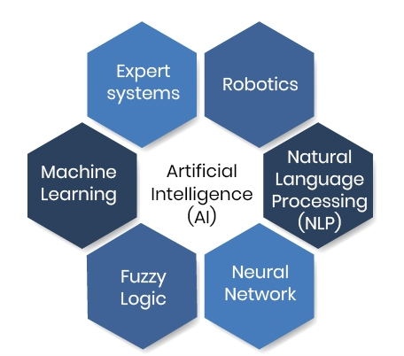
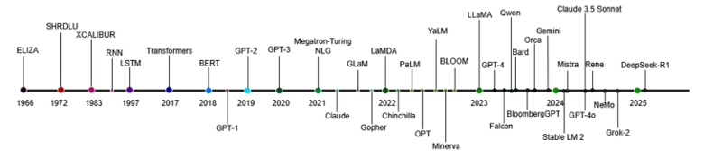
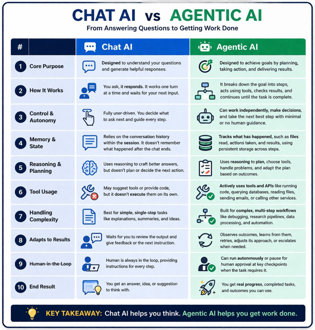

Introduction to Generative AI and LLMs
Day 1 – Lecture A
Menuka Bhandari
CFAES Bioinformatics Core, OSU
2025-07-04
Overview
Introduction to Artificial intelligence (AI) and Large language model (LLM)
Transformer architectures - Encoder only model, Decoder only model, Encoder-decoder model
Reinforcement Learning
Tokens, Context windows, Embedding
Chat-and-answer vs. agentic AI
Different models with different capabilities and costs
Introduction to AI
- Artificial intelligence (AI)
- AI is the branch of computer science that simulates human intelligence and trains computers to learn human behaviors
- Objective - make machines think like humans and learn human behaviors reasoning, planning, predicting, problem solving, decision making
- Major applications of AI in bioinformatics is protein structure prediction

Introduction to LLM
- Large language model (LLM)
- LLMs are the core of many modern AI applications
- LLMs are built on Transformer architecture & trained on massive collections of data
- Large in LLM refers to both the enormous number of model parameters and the vast quantity of training data used during development
- LLMs are trained to predict the next token or sequence of token in a piece of text.
- Two key characteristics of LLMS are large parameter counts and in-context learning capabilities
- Examples; ChatGPT (Open AI), Claude (Anthropic), Gemini (Google Deep Mind), Llama (Meta)
Introduction to LLM (cont.)
- What can LLM do for the biological scientists?
- LLM can generate code from the natural language description, auto complete code, execute complex tasks, manage multiple files and execute everything in a secure environment
- Agentic AI can execute scripts, troubleshoot errors, validate outputs, and propose changes autonomously
- Programming is no longer a barrier to biological scientists

Introduction to LLM (cont.)
- Transformer
- Foundation of modern LLM introduced in 2017
- Can process an entire input sequence in parallel - faster and efficient computation
- Ability to capture long-range dependencies within text - understand relationships between words and phrases across extensive contexts
- Relies on a self-attention mechanism that enables the model to analyze and weigh the importance of input sequence while making predictions
Advantages of transformer
• Read the whole sequence at once
• Capture long-range relationships
• Train much faster
Three Transformer architectures - Encoder-only, Decoder-only & Encoder-Decoder model
Reinforcement learning (RL)
- A machine learning approach where an agent learns by trial and error
- The agent interacts with an environment to maximize rewards and minimize penalties
- Successful actions are reinforced, while poor actions are discouraged
- Over time, the agent improves its decision-making through experience
- Example; De novo Drug discovery to optimize drug candidates
- In protein engineering, an AI model generates protein sequences, receives rewards for desirable properties (e.g., higher stability or stronger binding affinity), and learns to generate improved proteins over time
Chat-and-answer vs. agentic AI

Different models with different capabilities and costs